iTest User's Guide
The Master Schedule feature is a tool for creating high-level sequences composed of schedules, procedures, and other master schedules. You can use this feature to create and run complex tests without using script or other programming methods. This feature provides:
This document outlines the process for creating, managing, and running master schedules.
The following terms will help you understand the major components of master schedules.
Descriptions
| Value | Value |
| Step | A step within a master schedule file. Steps may be schedules, procedures, or other master schedules. Steps can be repeated using loops. |
| Schedule Step | The name of a schedule designed to run with iTest Schedule Runner (not VCL). |
| Procedure Step | The name of a procedure containing VCL code. |
| Master Schedule Step | A master schedule step that may be composed of schedules, procedures, step tasks, etc. Master schedule steps may not contain master schedules within them. |
| Step Tasks | A step task consists of a condition and an action. The actions are used to perform various tasks within steps. |
To access the Master Schedules editor, select Tests > Master Schedules in SolutionBuilder. The Master Schedules editor displays.
Master Schedules Editor
The following right-click options are available in the editor:
Right-Click Options
| Option | Description |
| Left Pane | |
|---|---|
| Add | Adds a new master schedule. |
| Remove | Removes the selected master schedule. |
| Rename... | Launches the Rename dialog, which allows you to rename the master schedule. |
| Duplicate | Duplicates the selected master schedule. |
| Export to LabCentral... | Export the selected master schedule to LabCentral's Manage Lab Files page. Note: You must be connected to LabCentral for this option to be available. |
| Cut | Removes the selected master schedule and copies it to the clipboard. |
| Copy | Copies the selected master schedule to the clipboard. |
| Paste | Pastes the copied master schedule. |
| Undo | Undoes the last action. |
| Redo | Redoes the last undone action. |
| Right Pane | |
| Insert Schedule Step | Inserts a new schedule step into the master schedule. For more information, refer to the Adding Schedule Steps section below. |
| Insert Procedure Step | Inserts a new procedure step into the master schedule. For more information, refer to the Adding Procedure Steps section below. |
| Insert Master Schedule Step | Inserts a new master schedule step into the master schedule. For more information, refer to the Adding Master Scehdule Steps section below. |
| Insert Loop | Inserts a loop into the master schedule. For more information, refer to the Using Looping section below. |
| Delete Selected Steps | Deletes the selected steps from the master schedule. |
| Enable/Disable Steps | Enables/disables the selected steps in the master schedule. For more information, refer to the Using Enable and Disable section below. |
| Copy Steps/Copy | Copies the selected step(s) or cell value(s) to the clipboard. For more information, refer to the Using Copy and Paste section below. |
| Paste Steps/Paste | Pastes the copied step(s) or cell value(s). For more information, refer to the Using Copy and Paste section below. |
| Undo | Undoes the last action. |
| Redo | Redoes the last undone action. |
| Channel Select... | Launches the Channel Selection dialog. This dialog allows you to select a channel for procedures with arguments. This option is only available for procedure steps. |
| Procedure Select... | Launches the Select Procedure dialog. This dialog allows you to select a procedure. This option is only available for procedure steps. |
The following column types are available to customize your master schedule:
Column Types
| Column | Description |
| Step Name | The name of the step (e.g., Step1). |
| Step Parameter | The schedule, procedure, or master schedule to use as the step's parameter. The options available are dependent upon the type of step inserted. |
| Step Task 1 - 2 | Launches the Edit Step Task dialog. Master schedules support conditional and unconditional step tasks. For more information, refer to the Step Tasks documentation. |
| Comment | Notes for the step (e.g., Run Schedule). |
Master Schedules are comprised of different steps that can execute schedule files (.sc2), procedure files (.tsc), and master schedule files (.msf). You can add schedule, procedure, and master schedule steps to your master schedule using their respective Insert Step right-click option. The following sections detail each step type. You can also include step tasks and loop counts to further customize your master schedule. The following sections walk you through the process of adding these different step types to create a master schedule that can fulfill your testing needs.
Schedule steps allow you to run a pre-configured schedule. Schedules can be configured using SolutionBuilder's Schedules editor. For more information about configuring schedules, refer to the Managing Schedules documentation.
The schedule to run is specified in the Step Parameter column. Schedule files that are located in the Schedules folder will display in the list of available schedules.
Schedule Step Parameter
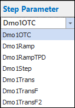
Procedure steps allow you to run a pre-configured procedure containing VCL code. Procedures can be configured using SolutionBuilder's Procedures editor. For more information about configuring procedures, refer to the Managing Procedures documentation.
The procedure to run is specified in the Step Parameter column. The drop-down list in this column is limited. To display all solution procedures, use the Procedure Select... right-click option to open the Select Procedure dialog.
Select Procedure Right-Click Option
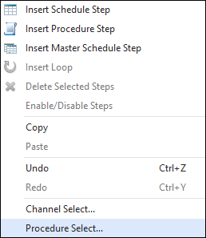
Select Procedure Dialog
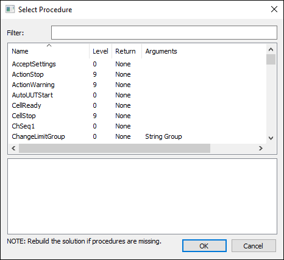
For procedures with arguments, you can select a channel to be used via the Channel Select... right-click option. This option will open the Channel Selection dialog.
Select Channel Right-Click Option
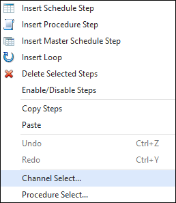
Channel Selection Dialog
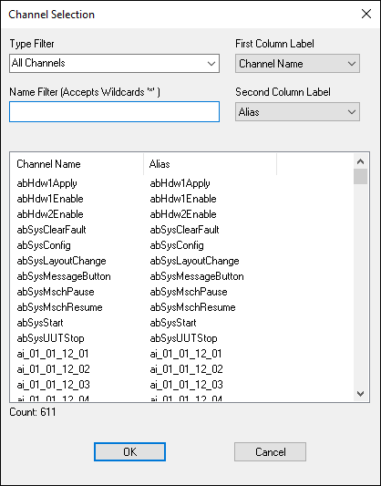
Master schedule steps allow you to run a pre-configured master schedule. Note that you cannot insert master schedules that have master schedules embedded within them.
The master schedule to run is specified in the Step Parameter column. Master schedule files that are located in the MasterSchedules folder will display in the list of available master schedules.
Master Schedule Step Parameter
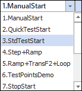
You can use the looping feature to repeat steps within your master schedule. During runtime, the loop count is updated in the live viewer representing the total number of loops complete and the total count of loops. To add step loops, perform the following:
When the master schedule is running the loop, the current loop is indicated in the status bar at the bottom of the Master Schedule panel.
Master Schedule Loop Count
You can also set the loop value as a numeric channel, enabling you to parameterize the number of times the loop is repeated. To set the loop as a channel, double-click the cell and click the button to display the Channel Selection dialog.
Channel Selection Dialog
 |
NOTE: | Loops cannot be embedded within loops. |
Test Point tables provide an iterative means for testing and collecting data. The Test Points table is a feature that can be executed within loops; the tables are comprised of channel names and values as defined for specific tests. When a master schedule is running and it enters a loop with a test points table, the channel values are obtained from each row in the Test Points table. The number of rows is equivalent to the iterations of the loop. The table supports a maximum of 20 channels (columns) and 100 values (rows) for each channel.
|
NOTE: | The Edit Test Points dialog is only editable while the master schedule is in edit mode; otherwise, the dialog is read-only. |
A loop contains two nodes: the Begin node and the End node. To define the Test Point table associated to the loop, perform the following:
You can use the following keyboard shortcuts to expedite the process of completing the table: CTRL + X, CTRL + C, CTRL + V. To copy and paste an entire test points table, you must first add the necessary number of rows and columns to the new table before pasting your values.
You can copy and paste entire step rows, individual cells, and loops in the master schedule.
To copy an entire step row, select the checkbox next to the row(s) you want to copy and then right-click and select the Copy Steps option. Right-click within the master schedule and select the Paste Steps option to paste them. The new steps will appear at the end of the list of steps.
Copy Steps
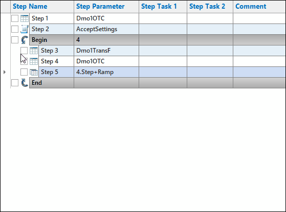
To copy and paste items such as step parameters, step tasks, or comments, right-click the item and select Copy. Right-click and select Paste in the location you want to add the copied value.
Copy Item
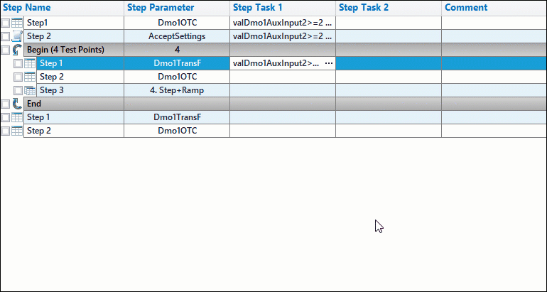
Values pasted in the Step Parameter column are verified against the list of valid values depending on the row type. If the value is not valid, an error message will display.
Not Valid
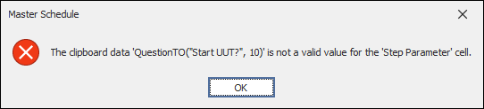
If you copy a loop, the test point table values are also copied into the new loop.
|
NOTE: | Shortcut keys are not supported. |
Steps that are marked as disabled will be skipped during runtime. Steps can be enabled and disabled by selecting Enable/Disable Steps from the right-click menu:
Enable/Disable Step
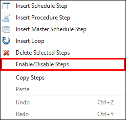
When a step is disabled, it will appear with a line through it as shown below:
Disabled Step
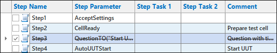
To enable a disabled step, right-click on the step and select Enable/Disable step. Once enabled, the line through the step will no longer appear.
 |
CAUTION: | Any "Goto Step" Step Tasks that reference a disabled step will instead go to the step after their intended target. |
Master schedules can be exported to LabCentral's Manage Lab Files page using the following steps:
|
NOTE: | Master schedules can only be exported if iTest is connected to LabCentral. |
The Master Schedule editor exists in SolutionBuilder, where you can perform all necessary configurations. The following sections detail the process for adding, modifying, and using the Master Schedule panel in AutomationPanel.
To add the master schedule panel to AutomationPanel, perform the following:
The Master Schedule menu bar Start and Stop buttons are tied to VCL procedures, where each procedure name is stored in the powertek.ini file; refer to the Master Schedules INI Options documentation for more information.
To begin creating your schedule, select (new) and click the Edit icon ( ) on the Master Schedule panel tool bar. SolutionBuilder will load in a new window. You will be prompted to enter a name for the schedule.
Name MasterSchedule
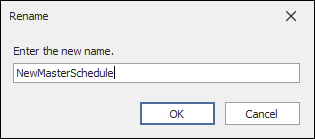
Refer to the Editing Master Schedules section above for information on how to edit your master schedule.
To view your Master Schedule in iTest, select Save or Save As located at the bottom of the editor.
The saved Master Schedule will load in the Master Schedule panel:
Master Schedule in iTest Panel
The Master Schedule log records errors and actions completed in Master Schedule. The log can be used to easily investigate and diagnose errors that have occurred when using Master Schedule.
To view the Master Schedule Log, select the View Log button from the Master Schedule panel.
View Log Button
The Master Schedule log will appear as a .log file.
Master Schedule Log
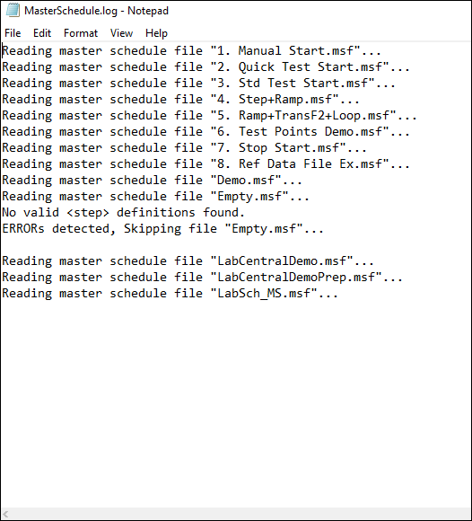
The Property Manager dialog allows you to customize the visual aspects of the panel, such as font type, size, and grid colors. Additionally, you can define the file search criteria for procedures and schedules in the Procedures Filter and Schedules Filter fields. The available configuration options are detailed in the table below.
To access the Property Manager dialog, select Tools > Property Manager from the main menu then right-click the Master Schedule panel. Alternatively, click the hamburger icon ( ) located in the upper-right corner of the panel.
Master Schedule Property Manager Dialog
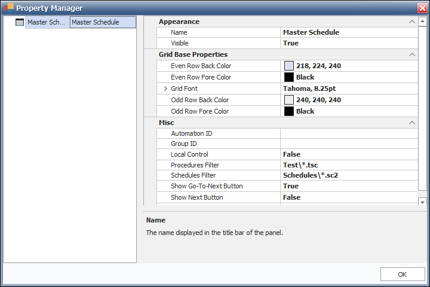
Refer to the Master Schedule Panel for more information on how to customize the Master Schedule panel.
Once you have created and customized your master schedule, you can execute it. Master schedules cannot be run in edit mode; to exit edit mode, save your panel and click the Edit icon ( ). Click the Start button ( ) to initiate the schedule.
If you have configured your solution to incorporate the use of other panels while your master schedule is running, you can view the process of the test and its data values as it is executing.
Test In-Progress
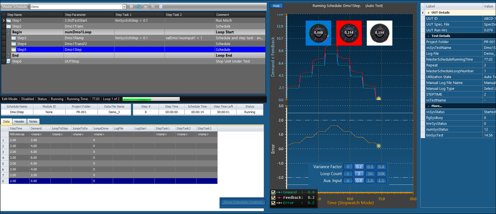